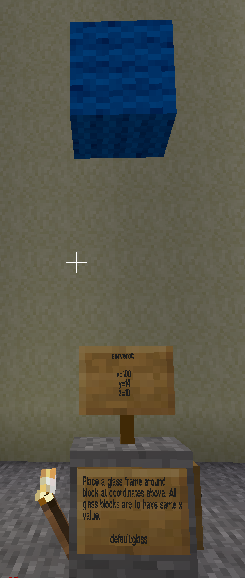

This is a repeat of Minetest Task 1 using variables instead of numbers. Fill in the rectangles in the program task.py on the left. Use hints to find out exactly what needs to be done. Ctrl-shift-F10 to run the program. "Check task" button above to check it is done correctly. Click the left blue arrow to return to the previous task or the right blue arrow to go to the next task.
Store coordinates of wool location in variables and then use variables in the build command to place the wool.
Variables are memory to store data in a computer program. They can store numbers or text or many other forms of data. To store data in a variable, give it a name and put the data in it using an equals sign.
my_variable = 100
The above line creates a new variable called my_variable and gives it the value 100.
Storing data in variables helps when you don't know the data when you are writing the program but will know it
when the program is run. For example the z value is different for every player. The program can be written before the
player is known and the z value can be filled later. The program on the left has a variable called ref_z which
stores the player's z value. It is called ref_z because all your building will use it as a reference coordinate
and you will build relative to it.
To use the data in a variable, type its variable name where you previously typed the data. For example, if your ref_z was 0:
mc.build(100, 14, 0, "wool:blue")
becomes
mc.build(ref_x, ref_y, ref_z, wool)